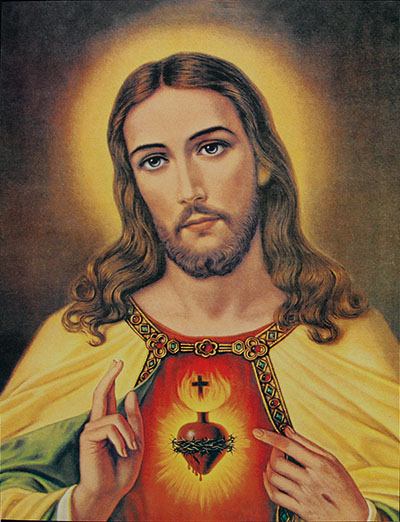
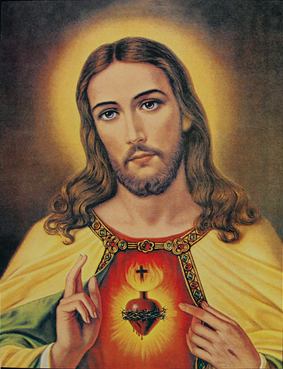
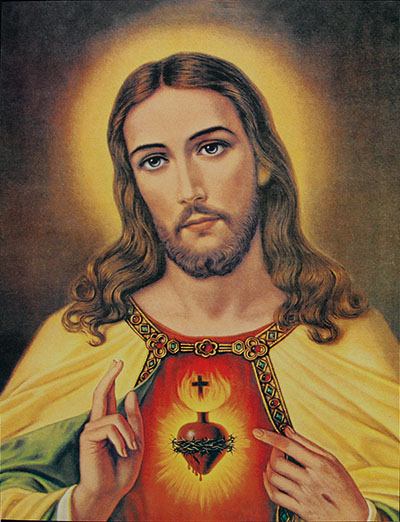

Malarstwo religijne
Tematyka religijna, sceny z Biblii, przedstawiają najważniejsze postaci np. Matkę Boską . Ważna jest znajomość atrybutów charakterystycznych dla danej postaci
Przykładowe obrazy:
 

Autor: Julia Chalecka
Tematyka religijna, sceny z Biblii, przedstawiają najważniejsze postaci np. Matkę Boską . Ważna jest znajomość atrybutów charakterystycznych dla danej postaci
Przykładowe obrazy:
